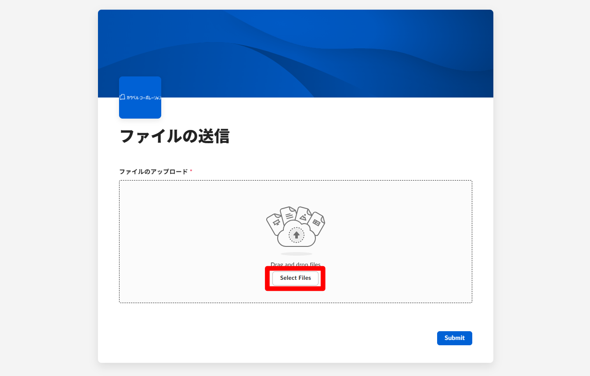
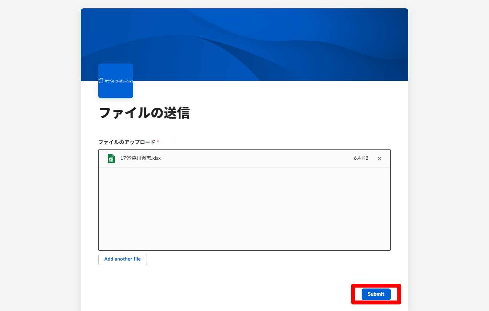
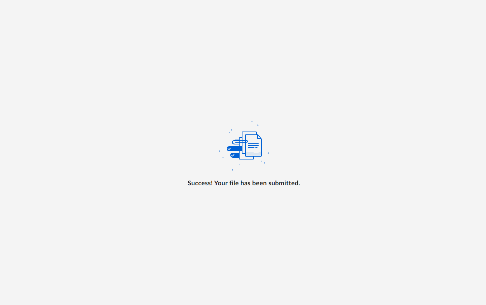

校内ネットワーク不調につき，別の方法でのファイル作成・提出の方法を実習します。
0. 基本操作の練習
0-a. ～ 0-e. の手順をまず読んでから，テンプレートをダウンロードすること。
0-a. テンプレートのダウンロード
ダウンロードファイルは，PC内の「ダウンロード」フォルダに保存される。
0-b. ダウンロードしたファイルをエクセルで開く
エクセルを起動し，ダウンロードしたファイルを開く。
0-c. 名前を付けて保存
開いているエクセルファイルを，名前を付けて保存する。
次の点に注意すること。
- 保存先に「デスクトップ」を選ぶ
- ファイル名は従来どおり，「1799森川徹志.xlsx」のようにする。下のようなファイル名は減点になります。
- 徹志1799森川.xlsx（クラス・出席番号・氏名 の順になっていない）
- １７９９森川徹志.xlsx（数字が全角）
0-d. ファイルのアップロード
ファイルのアップロードページにアクセスする。
中央の［Select Files］ボタンを押し，先ほど保存したエクセルファイルを選択する。
選択できたら，青い［Submit］ボタンを押す。
「Success! Your file has been submitted.」のメッセージが出れば完了。
0-e. エクセルの終了
開いているエクセルを閉じる。トラブル防止のため，必ず閉じること！
1. 課題（円グラフの作成）
1-a. ～ 1-d. の手順をまず読んでから，テンプレートをダウンロードすること。
1-a. テンプレートのダウンロード
ダウンロードファイルは，PC内の「ダウンロード」フォルダに保存される。
1-b. ダウンロードしたファイルをエクセルで開く
エクセルを起動し，ダウンロードしたファイルを開く。
まず，シートを複製してから課題を始め，同じ課題を2回行うこと。
1-c. 名前を付けて保存
ロイロで配布した説明書に沿って課題を作成し，名前を付けて保存する。
次の点に注意すること。
- 保存先に「デスクトップ」を選ぶ
- ファイル名は「1799森川徹志01.xlsx」のように、名前の後ろに「01」と付ける。
1-d. ファイルのアップロード
ファイルのアップロードページにアクセスする。「円グラフの作成」以外のアップロードは無効とします。
ファイルをアップロードし，「ファイルを正常に送信しました」（Success! Your file has been submitted.）のメッセージが出れば完了。
開いているエクセルを必ず閉じること！
2. 課題（切り離し円グラフの作成）
2-a. ～ 2-d. の手順をまず読んでから，テンプレートをダウンロードすること。
2-a. テンプレートのダウンロード
ダウンロードファイルは，PC内の「ダウンロード」フォルダに保存される。
2-b. ダウンロードしたファイルをエクセルで開く
エクセルを起動し，ダウンロードしたファイルを開く。
まず，シートを複製してから課題を始め，同じ課題を2回行うこと。
2-c. 名前を付けて保存
ロイロで配布した説明書に沿って課題を作成し，名前を付けて保存する。
次の点に注意すること。
- 保存先に「デスクトップ」を選ぶ
- ファイル名は「1799森川徹志02.xlsx」のように、名前の後ろに「02」と付ける。
2-d. ファイルのアップロード
ファイルのアップロードページにアクセスする。「切り離し円グラフの作成」以外のアップロードは無効とします。
ファイルをアップロードし，「ファイルを正常に送信しました」（Success! Your file has been submitted.）のメッセージが出れば完了。
開いているエクセルを必ず閉じること！
3. 課題（集合棒（縦棒）グラフの作成）
3-a. ～ 3-d. の手順をまず読んでから，テンプレートをダウンロードすること。
3-a. テンプレートのダウンロード
ダウンロードファイルは，PC内の「ダウンロード」フォルダに保存される。
3-b. ダウンロードしたファイルをエクセルで開く
エクセルを起動し，ダウンロードしたファイルを開く。
まず，シートを複製してから課題を始め，同じ課題を2回行うこと。
3-c. 名前を付けて保存
ロイロで配布した説明書に沿って課題を作成し，名前を付けて保存する。
次の点に注意すること。
- 保存先に「デスクトップ」を選ぶ
- ファイル名は「1799森川徹志03.xlsx」のように、名前の後ろに「03」と付ける。
3-d. ファイルのアップロード
ファイルのアップロードページにアクセスする。「集合棒（縦棒）グラフの作成」以外のアップロードは無効とします。
ファイルをアップロードし，「ファイルを正常に送信しました」（Success! Your file has been submitted.）のメッセージが出れば完了。
開いているエクセルを必ず閉じること！
4. 課題（積み上げ棒グラフの作成）
4-a. ～ 4-d. の手順をまず読んでから，テンプレートをダウンロードすること。
4-a. テンプレートのダウンロード
ダウンロードファイルは，PC内の「ダウンロード」フォルダに保存される。
4-b. ダウンロードしたファイルをエクセルで開く
エクセルを起動し，ダウンロードしたファイルを開く。
まず，シートを複製してから課題を始め，同じ課題を2回行うこと。
4-c. 名前を付けて保存
ロイロで配布した説明書に沿って課題を作成し，名前を付けて保存する。
次の点に注意すること。
- 保存先に「デスクトップ」を選ぶ
- ファイル名は「1799森川徹志04.xlsx」のように、名前の後ろに「04」と付ける。
4-d. ファイルのアップロード
ファイルのアップロードページにアクセスする。「積み上げ棒グラフの作成」以外のアップロードは無効とします。
ファイルをアップロードし，「ファイルを正常に送信しました」（Success! Your file has been submitted.）のメッセージが出れば完了。
開いているエクセルを必ず閉じること！
5. 課題（100%積み上げ棒グラフの作成）
5-a. ～ 5-d. の手順をまず読んでから，テンプレートをダウンロードすること。
5-a. テンプレートのダウンロード
ダウンロードファイルは，PC内の「ダウンロード」フォルダに保存される。
5-b. ダウンロードしたファイルをエクセルで開く
エクセルを起動し，ダウンロードしたファイルを開く。
まず，シートを複製してから課題を始め，同じ課題を2回行うこと。
5-c. 名前を付けて保存
ロイロで配布した説明書に沿って課題を作成し，名前を付けて保存する。
次の点に注意すること。
- 保存先に「デスクトップ」を選ぶ
- ファイル名は「1799森川徹志05.xlsx」のように、名前の後ろに「05」と付ける。
5-d. ファイルのアップロード
ファイルのアップロードページにアクセスする。「100%積み上げ棒グラフの作成」以外のアップロードは無効とします。
ファイルをアップロードし，「ファイルを正常に送信しました」（Success! Your file has been submitted.）のメッセージが出れば完了。
開いているエクセルを必ず閉じること！
6. 課題（折れ線グラフの作成）
6-a. ～ 6-d. の手順をまず読んでから，テンプレートをダウンロードすること。
6-a. テンプレートのダウンロード
ダウンロードファイルは，PC内の「ダウンロード」フォルダに保存される。
6-b. ダウンロードしたファイルをエクセルで開く
エクセルを起動し，ダウンロードしたファイルを開く。
まず，シートを複製してから課題を始め，同じ課題を2回行うこと。
6-c. 名前を付けて保存
ロイロで配布した説明書に沿って課題を作成し，名前を付けて保存する。
次の点に注意すること。
- 保存先に「デスクトップ」を選ぶ
- ファイル名は「1799森川徹志06.xlsx」のように、名前の後ろに「06」と付ける。
6-d. ファイルのアップロード
ファイルのアップロードページにアクセスする。「折れ線グラフの作成」以外のアップロードは無効とします。
ファイルをアップロードし，「ファイルを正常に送信しました」（Success! Your file has been submitted.）のメッセージが出れば完了。
開いているエクセルを必ず閉じること！